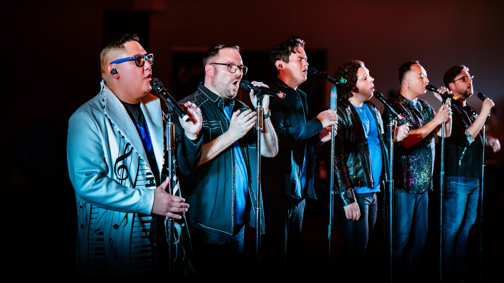

6 Minute Warning is a six-voice a cappella group from Edmonton, Alberta, singing pop and R&B with no instruments.

6 Minute Warning is a Canadian vocal group based out of Edmonton, Alberta. The group consists of six members with extensive backgrounds in rock, pop, jazz, classical, and choral music. 6 Minute Warning is renowned for its exceptional singing – tight harmonies, seamless phrasing, thrilling lead-solos, and intricate beatboxing. Their love for singing and their ability to create a soundscape with their voices continues to inspire audiences both young and old.
The group's repertoire ranges from the upbeat stylings of rock and pop music to the complex nuances of jazz, drawing influence from Boyz II Men, Take 6, Michael Jackson and many others. 6 Minute Warning has had the pleasure of performing with many talented artists and organizations, including Ben Folds, Glass Tiger, Mark Masri, Ruben Studdard, the Edmonton Symphony Orchestra, and Pro Coro Canada. They have also performed as guest artists at various festivals including the Canadian Cantando Festivals, and ChoralFest North alongside the talented contemporary vocal ensemble Sixth Wave. In 2008 they competed in David Foster's Star Search, placing as finalists and performing at his prestigious charity auction.
Recognizing the importance of encouraging choral and vocal education and encouraging young men to sing, 6 Minute Warning performs and presents workshops for many high schools and community groups.
Range from low bass to countertenor, with beatboxing.
“Their rendition of O Canada was spectacular - we have had a number of comments on this - it was, to say the least, moving. We have had a number of good singers for O Canada in the past but none has elicited the response, the emotion that came when 6 Minute Warning sang it.”